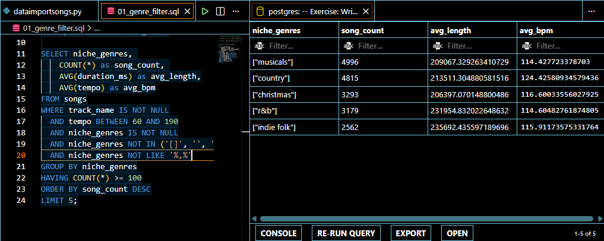
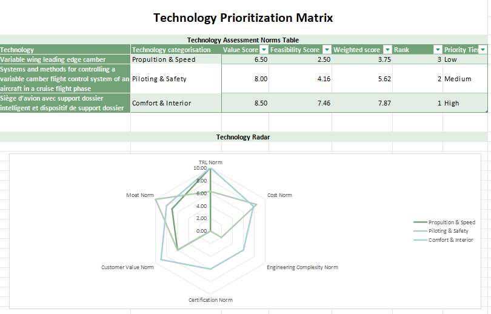
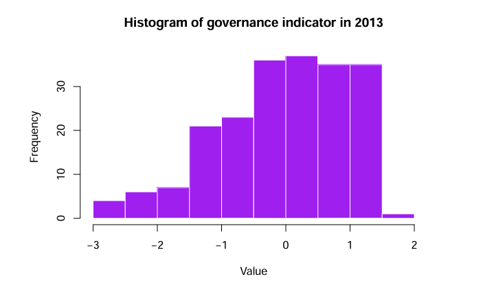

i'm monica and i'm a statistics student based in Ottawa curently pursuing a Bachelor of Science Honors in Statistics at the University of Ottawa.
i mix code with context (R, Python, Java, AI, PostgreSQL and Power BI) to understand and support innovation in everything from aviation tech to viral content trends.
I'm currently looking for Summer 2026 opportunities where I can help research and development teams with data-driven strategy and finding clarity in their data without getting lost in the spreadsheets.
Designed mixed-methods research frameworks applying game theory and behavioural economics to deep tech ecosystems and sports analytics; published 20+ bilingual analyses with 18% avg. engagement, synthesising complex data into actionable insights for strategy-focused readers.
Led competitive benchmarking and market feasibility analysis using SWOT and KPI modelling; delivered an implementation-ready product entry strategy with quantified metrics to support data-driven decision-making for edutainment sector expansion.
Audited 100+ viral videos using engagement pattern analysis and behavioural clustering; identified 3 high-leverage content predictors that increased completion rates by 40%, directly informing product roadmap refinements and creative prioritisation.
Synthesised secondary data and socio-cultural research into accessible educational content through rigorous source validation; supported audience growth in niche digital markets via data-informed content strategy.
Managed end-to-end event logistics for 60+ attendees and 10 volunteers; implemented real-time revenue tracking and pricing strategy based on audience behaviour analysis to ensure profitability and inform future product testing.
blvckn0des is a bilingual (FR/EN) newsletter on innovation, finance and business strategy with a thesis built around 3 principles:
[BlvcknOdes page 2 — add your content here]
[BlvcknOdes page 3 — add your content here]
A data-driven exploration of revenue potential across music genres. Built using a 550k-song Spotify dataset, multivariate regression, and KNN imputation — connecting audio features to financial projections for independent producers and A&R teams.

Developed a strategic technology roadmap for the business aviation sector, synthesising market trends, regulatory frameworks, and emerging technologies to guide long-term investment and innovation decisions. Applied mixed-methods research and competitive benchmarking to map interdependencies between operational priorities and technological capabilities. Delivered actionable, data-driven recommendations positioned at the intersection of policy analysis and business strategy.

Tested correlation between political stability metrics and FDI inflows across 219 countries using World Bank data.

CURRENT VERSION: 1.0 (MVP Development)
wamii is a conversational AI language learning PWA designed to achieve deep fluency through personalized, vernacular-aware dialogue. Unlike gamified competitors (e.g., Duolingo), wami focuses on constructivist pedagogy, using AI to emulate natural speech patterns and topics of interest derived from user preferences.
The platform prioritizes low-resource languages (starting with Sango), supports dialectal variations (Creoles, vernaculars), and employs a Hybrid Architecture (On-device Wasm + Cloud AI) to balance privacy, latency, and computational power.
[Next Big Projects page 2 — add your content here]